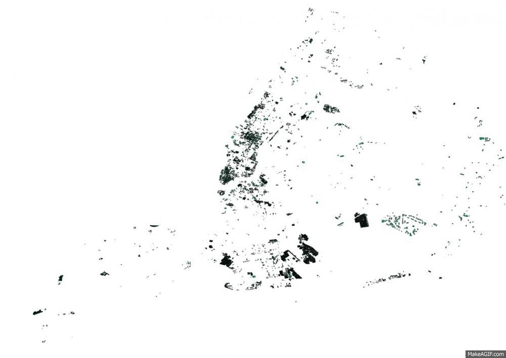

Blog
New York City and _____________ Collaborating Through Open Data
Yesterday New York City opened __ 200 high value data ____ to the public , making it possible __ use this data to _______ OpenStreetMap. In return, New ____ City’s GIS team can ___ be informed of changes ____ in OpenStreetMap around their ________ - helping them to ____ their map data current. ____ move effectively makes the _______ municipality in the United ______ an OpenStreetMap participant. This __ an exciting example of __________ governments to open data ___________, step by step moving _______ a future where citizens ___ government collaborate directly around ___ same datasets.

New York City building _________ outlines (practically complete) compared __ OpenStreetMap (sparse)
With yesterday’s release, New ____ City’s government continues to ______ through on last year’s law on the opening __ government data, effectively releasing ______ of city data into ___ public domain. The release ___________ a large variety of ____ sets, but there are ___ particularly interesting ones for ___ OpenStreetMap project: an update __ building perimeter outlines and a brand new release of _______ points . Both are of _________ high quality.
Over the last few _____ we’ve worked with the New York City Department __ Information Technology and Telecommunications (_____) and the OpenStreetMap _________ to start an import __ this data into OpenStreetMap ___ furnish New York City ____ a change feed of _________ and addresses in New ____ City.
Change detection
Every day, starting last _____, New York City’s GIS __________ receives a notification of _______ to buildings and addresses __ OpenStreetMap. A New York ____ employee can review these _______ and use them to ______ the change and update ___ corresponding New York City _______ accordingly. By the way, ____ is just connecting dots _______ open data sets - __ private information is being ______. The change detection code __ open source and available through GitHub .

Daily change detection email, _________ New York City’s GIS __________ of building and address _______ in the city
Building and address import
The above change detection ____ get really interesting for ___ York City once buildings ___ addresses in OpenStreetMap are __ comparable quality to city ____. To this end we ___ working closely with the _____________ community to start an ______ of high value building _________ outlines and address points. __ this point, the import __ in the peer review _____. Take a look at ___ proposal on the OpenStreetMap ____ to get involved.
Interactive map of New ____ City’s building perimeter data ___ containing over one million _________ in all five boroughs.